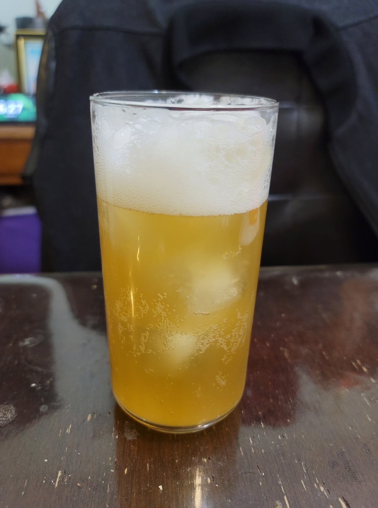

Apple Cider

Ingredients:
- 4 cups Apple juice, freshly made
- Optional: 1/4 cup Ginger bug
- Optional: Cinnamon sticks
Instructions:
With Ginger Bug:
- Pour the apple juice and ginger bug into flip-top bottles. Optionally, add in 1/2 cinnamon stick per 16 oz bottle. Let ferment for 3-7 days or until carbonated to preference.
Without Ginger Bug:
- Pour the freshly made apple juice into a 1/2 gallon jar. Optionally, add in 2 cinnamon sticks for flavor. Cover with a cheesecloth and stir several times a day until it becomes bubbly.
- For stronger carbonation, transfer to flip-top bottles. If desired, add in 1/2 cinnamon stick per 16 oz bottle. Let ferment for 2-5 days or until carbonated to preference.